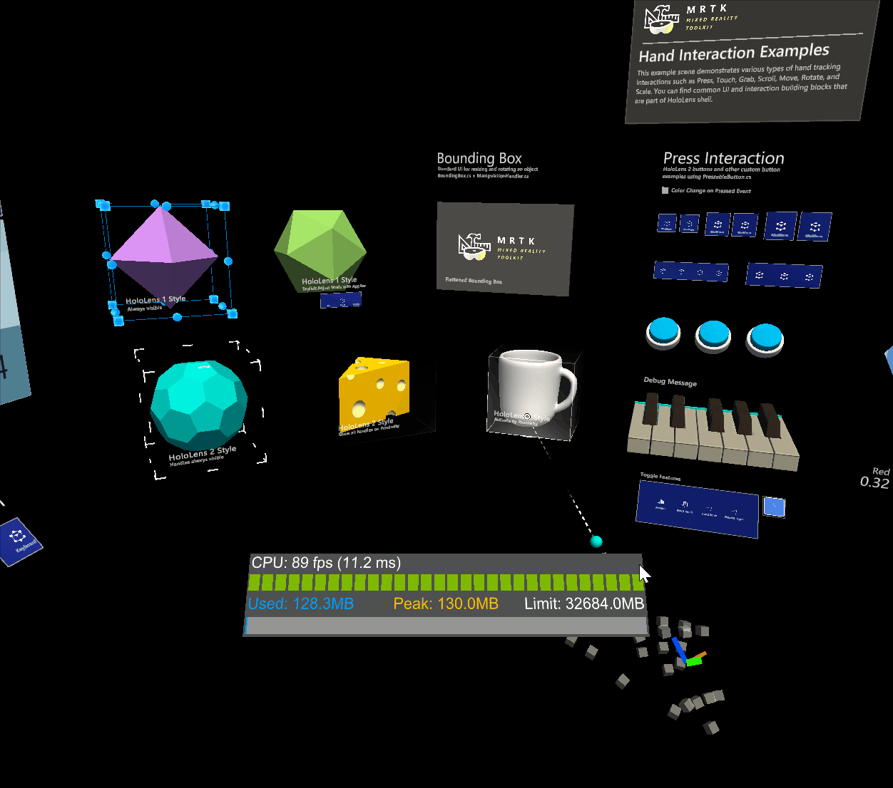

Object manipulator

The ObjectManipulator is the new component for manipulation behaviour, previously found in ManipulationHandler. The object manipulator makes a number of improvements and simplifications. This component is a replacement for the manipulation handler, which will be deprecated.
The ObjectManipulator script makes an object movable, scalable, and rotatable using one or two hands. The object manipulator can be configured to control how the object will respond to various inputs. The script should work with most forms of interaction, such as HoloLens 2 articulated hand, HoloLens 2 hand rays, HoloLens 1 gaze and gestures and immersive headset motion controller input.
How to use the object manipulator
To use the object manipulator, first add the ObjectManipulator script component to a GameObject. Make sure to also add a collider to the object, matching its grabbable bounds.
To make the object respond to near articulated hand input, add the NearInteractionGrabbable script as well.
Physics behaviour can be enabled for the object manipulator by adding a rigidbody component to the object. Physics behaviour enabled by adding this component is discussed in greater detail in Physics and collisions.
As well as this, manipulation can be constrained by adding manipulation constraint components to the object. These are special components that work with manipulation and change the manipulation behaviour in some way.

Inspector properties and fields

General properties
Host transform
The object transform that will be manipulated. Defaults to the object of the component.
Manipulation type
Specifies whether the object can be manipulated using one hand or two hands. Because this property is a flag, both options can be selected.
- One handed: Enables one handed manipulation if selected.
- Two handed: Enables two handed manipulation if selected.
Allow far manipulation
Specifies whether manipulation can be done using far interaction with pointers.
One handed manipulation properties
One hand rotation mode near
Specifies how the object will behave when it is being grabbed with one hand near. These options only work for articulated hands.
- Rotate about object center: Object rotates using rotation of the hand, but about the object center point. The object will appear to move less as it rotates, but there may be a feeling of disconnection between the hand and the object. More useful for far interaction.
- Rotate about grab point: Rotate object with the hand about the grab point between the thumb and index finger. It should feel as if the object is being held by the hand.
One hand rotation mode far
Specifies how the object will behave when it is being grabbed with one hand at distance. These options only work for articulated hands.
- Rotate about object center: Rotate object using rotation of the hand, but about the object center point. Useful for inspecting at a distance without the object center moving as the object rotates.
- Rotate about grab point: Rotate object using rotation of the hand, but about the pointer ray hit point. Useful for inspection.
Two handed manipulation properties
Two handed manipulation type
Specifies how two hand manipulation can transform an object. Because this property is a flag, any number of options can be selected.
- Move: Moving is allowed if selected.
- Scale: Scaling is allowed if selected.
- Rotate: Rotation is allowed if selected.

Constraints
Enable constraints
This setting will enable the linked constraint manager. Transform changes will be processed by constraints registered to the selected constraint manager.
Constraint manager
The dropdown allows to select any of the attached constraint managers. Object manipulator ensures there's a constraint manager attached at all times. Note that multiple components of the same type will show up under the same name in unity. To make it easier to distinguish between multiple constraint managers on the same object, the available options will show a hint on the configuration of the selected constraint manager (manual or auto constraint selection).
Go to component
The constraint manager selection comes with a Go to component button. This button will cause the inspector to scroll to the selected component so that it can be configured.
Physics
Settings in this section appear only when the object has a RigidBody component.
Release behavior
Specify which physical properties a manipulated object should keep upon release. Because this property is a flag, both options can be selected.
- Keep Velocity: When the object is released, if this option is selected it will keep its linear velocity.
- Keep Angular Velocity: When the object is released, if this option is selected it will keep its angular velocity.
Use forces for near manipulation
Whether physics forces are used to move the object when performing near manipulations. Setting this to false will make the object feel more directly connected to the users hand. Setting this to true will honor the mass and inertia of the object, but may feel as though the object is connected through a spring. The default is false.
Smoothing
Smoothing far
Whether frame-rate independent smoothing is enabled for far interactions. Far smoothing is enabled by default.
Smoothing near
Whether frame-rate independent smoothing is enabled for near interactions. Near smoothing is disabled by default because the effect may be perceived as being 'disconnected' from the hand.
Smoothing active
Obsolete and will be removed in a future version. Applications should use SmoothingFar, SmoothingNear or a combination of the two.
Move lerp time
Amount of smoothing to apply to the movement. Smoothing of 0 means no smoothing. Max value means no change to value.
Rotate lerp time
Amount of smoothing to apply to the rotation. Smoothing of 0 means no smoothing. Max value means no change to value.
Scale lerp time
Amount of smoothing to apply to the scale. Smoothing of 0 means no smoothing. Max value means no change to value.
Manipulation events
Manipulation handler provides the following events:
- OnManipulationStarted: Fired when manipulation starts.
- OnManipulationEnded: Fires when the manipulation ends.
- OnHoverStarted: Fires when a hand / controller hovers the manipulatable, near or far.
- OnHoverEnded: Fires when a hand / controller un-hovers the manipulatable, near or far.
The event fire order for manipulation is:
OnHoverStarted -> OnManipulationStarted -> OnManipulationEnded -> OnHoverEnded
If there is no manipulation, you will still get hover events with the following fire order:
OnHoverStarted -> OnHoverEnded
Physics and collisions
Physics behaviour can be enabled by adding a rigidbody component to the same object as an object manipulator. Not only does this enable configuration of release behaviour above, it also enables collisions. Without a rigidbody component, collisions don't behave correctly during manipulation:
- Collisions between a manipulated object and a static collider (i.e. an object with a collider but no rigidbody) do not work, the manipulated object passes straight through the static collider unaffected.
- Collisions between a manipulated object and a rigidbody (i.e an object with both a collider and a rigidbody) cause the rigidbody to have a collision response, but the response is jumpy and unnatural. There is also no collision response on the manipulated object.
When a rigidbody is added, collisions should work correctly.
Without rigidbody

With rigidbody
Elastics (Experimental)
Elastics can be used when manipulating objects via object manipulator. Note that the elastics system is still in experimental state. To enable elastics either link an existing elastics manager component or create and link a new elastics manager via the Add Elastics Manager button.